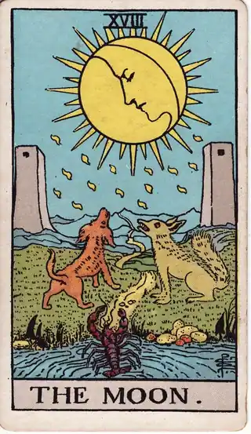
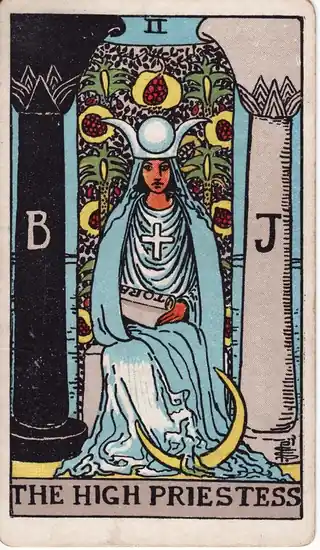
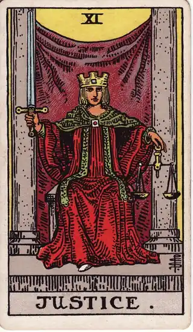

READING
The types of free tarot readings and how they differ — where the "that feels spot-on" feeling comes from, and how to use them for a decision
· DECIDE. editors

"I got a free tarot reading." "It described me so well it gave me chills." Lately, I often see posts like that on social media. What is becoming a talking point is a new type of free tarot reading that combines with your own listening history. It draws cards based on the songs you usually listen to, the books you read, and the films you watched, and the result comes with your favorite works attached, as if they were the basis for it. That is why it is built to make you feel "how does it know?"
Let me say this first: there is nothing wrong with free tarot readings themselves. The problem is that if you use one without knowing that readings also have types, you can take the result in the wrong way. The goal of this article is for you to learn how the readings that are popular now work and where the "spot-on" feeling comes from, and to take home which type to choose when you want to turn what you're torn about into a decision.
POINT 01 What is inside the free tarot readings that are popular now
The flow of the readings that are trending is broadly the same. You connect a listening history from a service like Spotify, choose a question from themes such as love, work, and what lies ahead, then draw three cards — past, present, and what lies ahead — and at the end the result is shown as a single declarative sentence. For example, alongside a sentence like "you are in a period of change," the songs you listened to recently or a film you watched repeatedly are lined up as the "basis."
The difference from conventional free readings is that the material is not your date of birth or name, but "a record of your own actions." Text made from your own data is easy to feel as words addressed to you. It is free, you can try it without registering, and the result screen can be shared as it is. Including how it is designed to spread, I think it is a well-made setup.
However, pause here once. Where does that feeling of "that feels spot-on" come from?
POINT 02 There are three reasons you feel "that feels spot-on"
The first is that the material is your own information. Your listening history and the question you chose are all yours. It is only natural that the text feels close to you, and it is more accurate to say "it is made from my own material" than "it described me."
The second is that the wording leaves room. Expressions like "it is time to notice your true feelings" and "a period of change has come" apply to many people, in many periods. The tendency to feel words that should apply to anyone as if they applied only to you is called the Barnum effect in psychology. The better the reading's writing is, the more this room is deliberately left in.
The third is that the question narrows things down first. By the time you answer a multiple-choice question, the direction of the answer is largely decided. To someone who chose "I'm torn about love," no talk of work will appear. The reading is only handing over words that follow that direction.
In other words, "spot-on or not" does not mean much as a ruler for judging a reading. What matters is knowing how it works, and then deciding what to use it for. So let me talk about the types of readings.
POINT 03 There are three types of readings
Even under the same name "tarot reading," three types with different roles are mixed together.
- The telling type: Things that present themselves as telling you what lies ahead, or another person's feelings. You only receive the result, and there is no way to check later whether it was right. If you treat it purely as something to enjoy, that is fine, but it does not become a basis for a decision
- The reflecting type: Things that use the cards or the result as a mirror to put your own feelings into words. The premise is that the answer is inside you. You can use it to sort out what you're torn about, but its weakness is that the insight you gain tends to disappear on the spot
- The deciding type: Things where, after gaining a perspective, you choose yourself and keep the choice together with your reason. Later you can look back and check "why did I decide that at the time?" This is the only type you can use as a tool for deciding
The trending reading that combines with a listening history is, in reality, close to a reflecting type presented in the style of the telling type. Your heart moves because your own data is reflected back. But the elements of the deciding type — a record of what you chose, and your reason — are not included. Before whether it is free or not, it matters to choose by this difference in type.
POINT 04 What the cards help you see

The Moon is a card of looking at things in the dark. Precisely because you cannot see clearly, it is easy to project what you want to see. The place where the feeling of "that feels spot-on" is born is exactly the world of this card. What the Moon points to is not that you should doubt the result. It is that in a place where the light is weak, you separate the facts you can check from the parts you are filling in with imagination. That one extra step is the knack for making good use of the reflecting type.

The High Priestess is a card that stands for the knowledge beyond the curtain — in other words, your own inner voice. The core of the reflecting type is here. Even if you cannot explain the reason right away, "somehow this catches my attention" is a real clue. If you found yourself nodding at the reading's result text, that may not be because it described you, but because words were attached to a feeling that was already inside you.

Justice is a card holding scales and a sword. The scales mean weighing two options by the same standard. The sword means cutting through, yourself, once you have weighed them. The stance of the deciding type is this figure. Not which is correct, but comparing by the same ruler and choosing the one with a reason you can explain to yourself. If that reason remains, then whatever the result, you can accept it as "it was my own decision."
POINT 05 If you want to use it for a decision, choose by "does a record remain?"
A reading's result moves your feelings on the spot. But what decides the quality of a decision is not whether the result was right or wrong. It is whether you can check later "why did I decide that?" If a reason remains, then even if the result is not what you hoped, you can look back and say "at that point, it was a reasonable judgment." Conversely, if no reason remains, people judge their past self by the result alone, and repeat the same decision they're torn over. I wrote in detail about the effect of leaving just one line of reason in Why noting the reason for a decision in one line reduces what you're torn over.
DECIDE. was made as a tool of the deciding type. The cards do not decide the answer. You line up two options, draw cards, and keep the perspective you gained, and the reason you decided at the time, in a decision log. I gathered the way of thinking that uses tarot not as "a tool for telling," but as "a tool for thinking," in Why I, who don't believe in fortune-telling, made tarot into a decision-making tool.
Opening a reading on a night when you cannot sleep for thinking too much is not, in itself, a bad habit. But instead of ending with receiving the result, try going as far as leaving one line about what you decided and why. With just that, a reading changes from "a memory of it feeling spot-on" into "a record of my own decision." I also gathered how to handle what you're torn about on a sleepless night on the page On nights when you can't sleep for thinking too much.
A free reading is an enjoyable doorway. But the exit from what you're torn about is not "it felt spot-on." It is being able to say "I decided it myself." I hope you will take home the three types in this article as a guide for choosing a tool that makes that difference.
Related decision guides
Cards related to this article


More reading
- When you're torn over whether to keep going or quit. Standards for letting go of attachment
- Why I, who don't believe in fortune-telling, made tarot into a decision-making tool
- Why the more you ask for advice, the less you can decide, and how to get your own voice back
- When you're torn over whether to keep your current job. How to read a plateau in your career
- What changes in deciding when you stop searching for the right answer